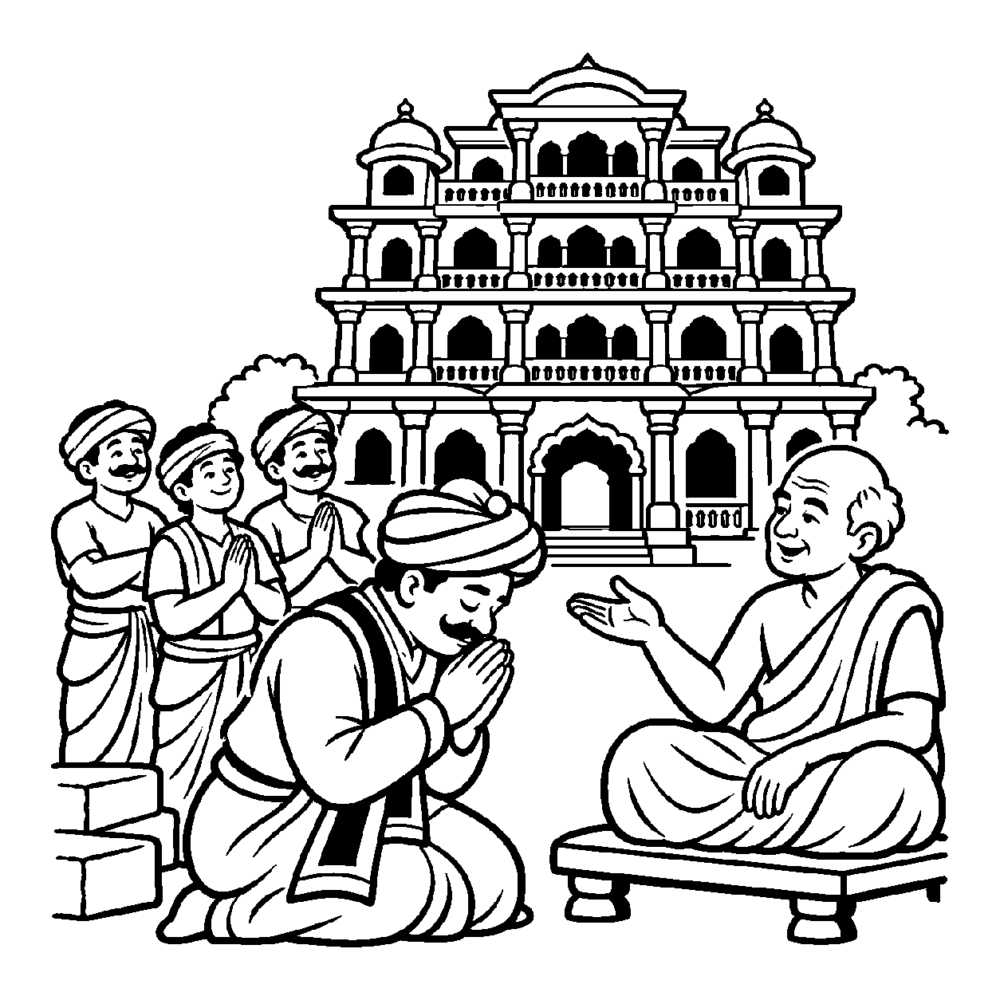

ચાકડો ગોળ ગોળ ફરી રહ્યો છે અને તેના પર ભીની માટીનો પિંડ મૂકેલો છે. કુંભાર પોતાના બંને હાથ વડે માટીને ધીમે ધીમે આકાર આપે છે અને થોડી વારમાં એક સુંદર, ઘાટીલો ઘડો તૈયાર થાય છે. બજારમાં ઘડો વેચતી વખતે કુંભાર ગર્વથી કહે છે: "આ ઘડો મેં બનાવ્યો છે!" વાસ્તવમાં કુંભાર એક ચેતન જીવ છે અને માટી એ પૃથ્વીકાય પુદ્ગલ દ્રવ્ય છે. માટી પોતાના રૂપ, રસ, ગંધ, સ્પર્શ અને પરમાણુઓની ક્રિયાથી સ્વયં ઘટરૂપે પરિણમી છે. કુંભારના હાથ અને ચેષ્ટા કેવળ બાહ્ય નિમિત્ત હતા. છતાં પણ કુંભારને ઘડાનો સાક્ષાત્ કર્તા કહેવો એ લોકસમાજનો વ્યવહાર છે. તેવી જ રીતે જ્યારે ચેતન જીવ બાહ્ય વિજાતીય પુદ્ગલ પદાર્થો — "આ મકાન મેં બનાવ્યું, આ વસ્ત્ર મેં વણ્યું, આ ગ્રંથ મેં લખ્યો કે આ રથ મેં તૈયાર કર્યો" — એમ બાહ્ય પદાર્થોની રચનાનો કર્તા બને છે, ત્યારે તેને 'પરકર્તૃત્વ ઉપચરિત અસદ્ભૂત વ્યવહાર' કહેવાય છે.
અનુપચરિત વ્યવહારમાં આત્મા કાર્મણ વર્ગણા જેવા અંતરંગ સંશ્લિષ્ટ કર્મોનો કર્તા કહેવાતો હતો, જ્યારે આ ઉપચરિત વ્યવહારમાં તો શરીરથી સર્વથા બહાર પડેલા પથ્થર, લાકડું, સુતર કે માટી જેવા પદાર્થોનો કર્તા આત્માને કહેવામાં આવે છે. પરમાર્થ દ્રષ્ટિએ એક દ્રવ્ય બીજા દ્રવ્યનું કાંઈ કરી શકતું નથી; માટી માટીનું કામ કરે છે અને ચેતના ચેતનાનું કામ કરે છે. છતાં પણ જગતની કારીગરી, ઉદ્યોગ અને નિર્માણનો વ્યવહાર ચલાવવા માટે આ નય અત્યંત અનિવાર્ય છે.
આ નય સાધકને સમજાવે છે કે બહારની વસ્તુઓ બનાવવામાં કેવળ આપણો નિમિત્તભાવ હોય છે; કર્તાપણાનો અહંકાર છોડી દેતાં જ ભીતર પરમ શાંતિ પ્રગટે છે.
માટી પરિણમે ઘટ મહીં, કુંભારે નવ થાય;
'ઘડો બનાવ્યો મેં' કહે, જગ વ્યવહાર ચલાય.
બાહ્ય પુદ્ગલે કર્તૃતા, ઉપચારિત વ્યવહાર;
નિમિત્ત માત્ર સમઝતાં, છૂટે અહં વિકાર.
શરીર અને બાહ્ય ઉપકરણો સાથેના સંબંધને સાધન માત્ર સમજી મોહના બંધનો શિથિલ કરવાં.

એક નગરમાં ધનપાલ નામના એક ધનાઢ્ય શેઠે પોતાના માટે પાંચ માળની એક અતિ ભવ્ય હવેલી તૈયાર કરાવી. હજારો કારીગરો, કડિયા અને મજૂરોએ પાંચ વર્ષ સુધી રાત-દિવસ પથ્થર ઘસ્યા, ઈંટો ગોઠવી અને હવેલી તૈયાર કરી. ગૃહપ્રવેશના દિવસે શેઠજીએ આખા નગરને જમણવાર આપ્યો અને મંચ પરથી ગર્જના કરી: "જુઓ, આ ભવ્ય હવેલી મેં બનાવી છે! મારા જેવી હવેલી આખા રાજ્યમાં કોઈ બનાવી શકે નહીં!" શેઠજી દરેક આવનાર મહેમાન સામે પોતાનું કર્તાપણું જતાવતા હતા અને અહંકારથી ફુલાતા હતા.
તે સમયે નગરના એક શાંત પ્રજ્ઞાચક્ષુ સંત ત્યાં પધાર્યા. શેઠજીએ સંતને કહ્યું: "મહારાજ! જુઓ, આ હવેલી મેં કેવી અદ્ભુત બનાવી છે!" સંતે સ્મિત સાથે પૂછ્યું: "શેઠજી! શું તમે એક પણ પથ્થરને તમારા હાથે કાપ્યો છે? શું તમે ચૂનો કે રેતી કાલવી છે? શું તમે છત ઢાળી છે?" શેઠજીએ કહ્યું: "ના મહારાજ, એ તો કડિયા અને મજૂરોએ કર્યું છે, પણ મેં પૈસા આપ્યા અને પ્રેરણા આપી!" સંતે કહ્યું: "શેઠજી! પરકર્તૃત્વ ઉપચરિત અસદ્ભૂત વ્યવહારને ઓળખો! પથ્થર અને ઈંટો એ જડ પુદ્ગલ છે, કડિયાના હાથ એ નિમિત્ત હતા અને તમારું ધન એ બાહ્ય સહાય હતી! વાસ્તવમાં માટી અને પથ્થરે સ્વયં હવેલીરૂપ પર્યાય ધારણ કરી છે. એક ચેતન આત્મા ક્યારેય જડ પથ્થરોનો વાસ્તવિક કર્તા બની શકતો નથી. 'મેં બનાવી' કહેવું એ કેવળ લોકવ્યવહારનો ઉપચાર છે; આમાં અહંકાર કરવા જેવું કશું જ નથી!" સંતની આ સાચી વાત સાંભળીને શેઠજીનું અહંકારનું માથું ઝૂકી ગયું. બાહ્ય કર્તાપણાનો મોહ છૂટી જતાં તેમનું ચિત્ત પરમ વિશ્રામમાં શાંત થઈ ગયું.
જો જીવ બાહ્ય મકાન, સંપત્તિ કે કાર્યોનો પોતાને સાચો કર્તા માની બેસે, તો તે અહંકાર અને મમત્વના અગ્નિમાં સદા બળતો રહે છે. પરદ્રવ્યો કે ક્ષણિક સંયોગોને જ સર્વસ્વ માની લેવાથી મમત્વ અને પરિગ્રહનો ભાર વધે છે, જે ચિત્તને સદા આકુળ-વ્યાકુળ રાખી આધ્યાત્મિક જાગૃતિને રૂંધી નાખે છે.
આ નય વ્યવહારિક કર્તવ્ય પૂરતું કાર્ય સ્વીકારીને પણ અંતરમાં અકર્તાભાવ જાળવવાનું શીખવે છે, જેથી સાધક મહામૌનમાં અંતર્લીન થઈ શકે છે. તે વ્યવહારિક સંયોગોની મર્યાદા દર્શાવીને પણ આંતરિક ગુણો પ્રગટાવવાની પ્રેરણા આપે છે, જેથી સાધક નિજ ચૈતન્ય સ્વરૂપમાં મહામૌનમાં અંતર્લીન થઈ જાય છે.